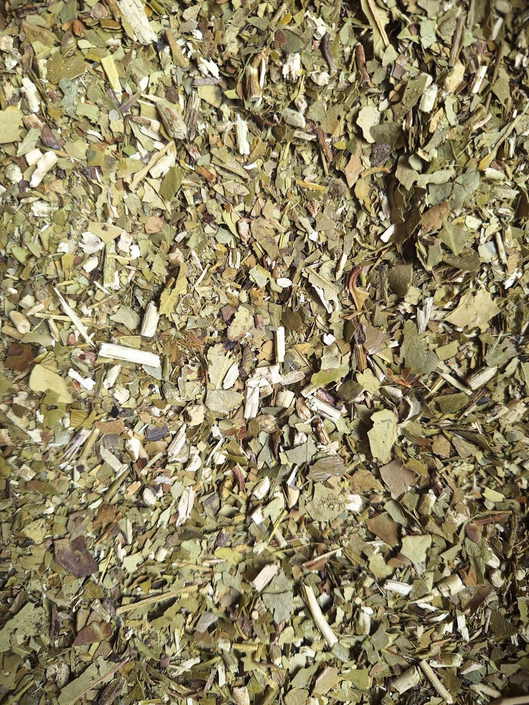

Barbacuá con palo
$7.200 – $7.400 / kgSecado a la barbacuá, con palo. La línea más clásica, con distintas moliendas y cortes de hierbas.
- Tradicional$7.200
- Tradicional entrefina$7.200
- Tradicional con cedrón$7.400
- Tradicional con cola de caballosin stock
- Canchada fina$7.200
- Con hojas de naranja$7.400
- Digestiva · palta, marcela y té verde$7.400